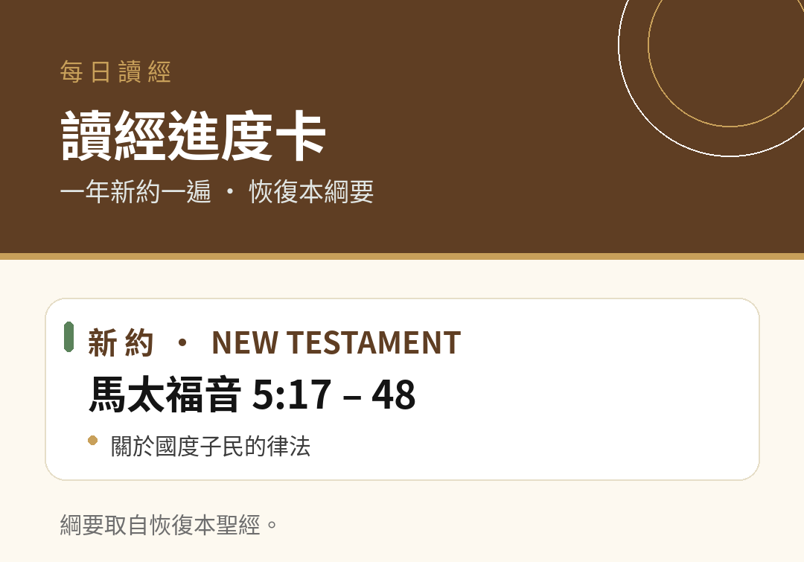

← 回讀經進度卡總頁
一年新約一遍
第1–30天 · 恢復本綱要
綱要取自恢復本聖經。每張卡片下方的按鈕即可下載。
第1天
新約 馬太福音 1章下載卡片第2天
新約 馬太福音 2章下載卡片第3天
新約 馬太福音 3章下載卡片第4天
新約 馬太福音 4章下載卡片第5天
新約 馬太福音 5:1-16下載卡片
第6天
新約 馬太福音 5:17-48下載卡片第7天
新約 馬太福音 6章下載卡片第8天
新約 馬太福音 7章下載卡片第9天
新約 馬太福音 8:1-17下載卡片第10天
新約 馬太福音 8:18-9:8下載卡片第11天
新約 馬太福音 9:9-34下載卡片第12天
新約 馬太福音 9:35-10:15下載卡片第13天
新約 馬太福音 10:16-11:1下載卡片第14天
新約 馬太福音 11:2-30下載卡片第15天
新約 馬太福音 12:1-21下載卡片第16天
新約 馬太福音 12:22-50下載卡片第17天
新約 馬太福音 13:1-30下載卡片第18天
新約 馬太福音 13:31-52下載卡片第19天
新約 馬太福音 13:53-14:13下載卡片第20天
新約 馬太福音 14:14-36下載卡片第21天
新約 馬太福音 15:1-28下載卡片第22天
新約 馬太福音 15:29-16:12下載卡片第23天
新約 馬太福音 16:13-27下載卡片第24天
新約 馬太福音 16:28-17章下載卡片第25天
新約 馬太福音 18章下載卡片第26天
新約 馬太福音 19:1-15下載卡片第27天
新約 馬太福音 19:16-20:16下載卡片第28天
新約 馬太福音 20:17-21:11下載卡片第29天
新約 馬太福音 21:12-22下載卡片第30天
新約 馬太福音 21:23-46下載卡片